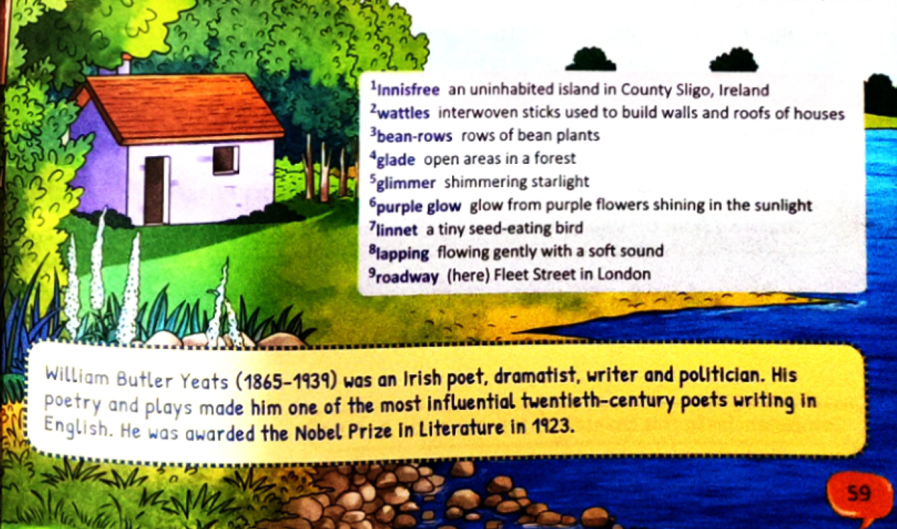
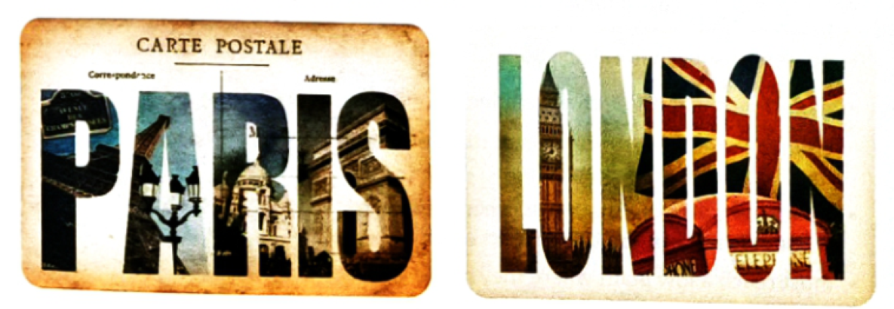

By William Butler Yeats (1865–1939) • A Lyrical Hymn to Solitude, Simplicity & Nature
Class 7 Literature Rhyme Scheme: ABAB CDCD EFEF Lough Gill, County Sligo, Ireland

Yeats's imagined paradise: A small cabin of clay and wattles on the peaceful island of Innisfree, County Sligo.
Complete Text with Stanza Analysis
Stanza 1 • The Vow of Solitude & Natural Dwelling
I will arise and go now, and go to Innisfree,
And a small cabin build there, of clay and wattles made;
Nine bean-rows will I have there, a hive for the honey-bee,
And live alone in the bee-loud glade.
Stanza Meaning: The speaker expresses an immediate, urgent desire to escape urban noise and retire to Innisfree. He envisions building a modest handmade hut of natural clay and wicker sticks, sustaining himself simply with nine rows of beans and a single beehive, living in tranquil solitude amidst buzzing wildlife.
Stanza 2 • The Rhythm of Natural Peace Across Day & Night
And I shall have some peace there, for peace comes dropping slow,
Dropping from the veils of the morning to where the cricket sings;
There midnight’s all a glimmer, and noon a purple glow,
And evening full of the linnet’s wings.
Stanza Meaning: Peace does not arrive abruptly; it settles gently with the morning mist and chirping crickets. Nature paints the hours: midnight sparkles with gentle starlight, noon radiates a warm purple light from blooming heather, and twilight skies flutter with graceful singing linnets.
Stanza 3 • The Deep Heart's Core & Urban Longing
I will arise and go now, for always night and day
I hear lake water lapping with low sounds by the shore;
While I stand on the roadway, or on the pavements grey,
I hear it in the deep heart’s core.
Stanza Meaning: Repeating the solemn refrain "I will arise and go now", the poet reveals he is currently standing on the cold, grey pavements of industrial London. Yet constantly, day and night, the hypnotic memory of gentle lake water whispers in the deepest spiritual core of his heart.
William Butler Yeats (1865–1939)
Celebrated Irish poet, dramatist, mystic, and senator. A key pillar of the Irish Literary Revival and co-founder of the Abbey Theatre in Dublin. In 1923, Yeats was awarded the Nobel Prize in Literature"for his always inspired poetry, which in a highly artistic form gives expression to the spirit of a whole nation."
Section 1: Poem Appreciation (Textbook MCQs)
a. The primary desire of the poet in the poem is to:
i. Go on an expensive holiday resort
ii. Escape the humdrum and noise of the city
iii. Work in peace on commercial literary contracts
iv. Be with extended family and noisy friends
b. Innisfree lures the poet because it is a:
i. Far-off mysterious foreign destination
ii. Luxurious modern countryside villa
iii. Tranquil, solitary, and peaceful sanctuary
iv. Economical location to save rent money
c. The poet has planned out his days on the island. He will:
i. Read and write literature in seclusion
ii. Nurture nature (plants beans, tend bees)
iii. Sleep, relax, and listen to natural sounds
iv. Do all of the above in complete harmony
Section 2: Detailed Textbook Questions & Answers
2a.Where is the poet now? How is this place different from where he wants to be?
Answer: The poet is currently standing in the midst of a bustling, noisy, industrial city—specifically in London on the roadway (Fleet Street) amidst grey stone pavements.
This urban environment is completely stark, dull, mechanical, overcrowded, and monochromatic (grey). In contrast, the place he yearns to be—the Lake Isle of Innisfree in County Sligo, Ireland—is a vibrant, green, solitary paradise characterized by clear lapping waters, purple heather glows at noon, shimmering starlight at midnight, singing crickets, and tranquil peace.
2b.What is the kind of dwelling place he has imagined for himself?
Answer: The poet does not envision a grand brick house or luxurious mansion. Instead, he imagines building a modest, eco-friendly small rustic cabin made of natural clay and wattles (interwoven wooden twigs and branches). It symbolizes ultimate simplicity, self-reliance, and minimal disturbance to Mother Nature.
2c.What would he like to plant on the island? What else will he do?
Answer: On the island, the poet would like to:
Plant nine bean-rows to provide fresh, wholesome sustenance.
Build and maintain a hive for the honey-bee to harvest sweet honey.
Live alone in the bee-loud glade, immersing his senses in the peaceful sounds of buzzing bees, fluttering linnets, chirping crickets, and gentle lake ripples.
2d.Yeats wrote ‘The Lake Isle of Innisfree’ while living in London. He yearned for the beauty and simplicity of the country life that he had experienced as a child. Would you like to do the same? Give reasons for your answer.
Answer: Yes, absolutely. In our modern hyper-connected lives filled with digital screens, honking traffic, air pollution, and hectic examination routines, retreating to a calm natural sanctuary like Innisfree offers invaluable mental peace, physical rejuvenation, and emotional clarity. Being surrounded by natural rhythms—fresh breeze, singing birds, and quiet waters—helps restore our focus, fosters creativity, and reconnects us with the true essence of life beyond material clutter.
2e.Refrain is the repetition of words or phrases. Pick an example of refrain in the poem. Why do you think this has been repeated?
Answer:
The prominent refrain in the poem is the phrase:
"I will arise and go now"
(Appearing in line 1 of Stanza 1, and repeated in line 9 of Stanza 3).
Why it is repeated:
Sense of Urgency: It emphasizes the speaker's decisive, unwavering determination to break free from his current monotonous urban existence without further delay.
Echo of Longing: It shows that his desire is not a fleeting daydream but an irresistible, deeply rooted spiritual calling that resonates in his "deep heart’s core" night and day.
Sensory Imagery: Sight vs Sound
Yeats masterfully engages our senses through rich visual and auditory imagery. Here is the complete classification matching textbook Exercise 3:
Visual Imagery (Sight)
Auditory Imagery (Sound)
"Dropping from the veils of the morning" The soft, hazy morning mist and clouds lifting like a sheer veil.
"The bee-loud glade" The continuous, vibrant buzzing of bees echoing across the forest clearing.
"Midnight’s all a glimmer" Starlight and moonbeams shimmering and sparkling on the undisturbed lake.
"Where the cricket sings" The high-pitched, melodic chirping of grass crickets at dawn and dusk.
"Noon a purple glow" Sunlight reflecting off blooming purple heather flowers covering the hills.
"Evening full of the linnet’s wings" The gentle whirring and fluttering sounds of small songbirds in flight.
"Pavements grey" The dreary, dull, lifeless grey concrete stones of industrial London.
"Lake water lapping with low sounds" The rhythmic, gentle liquid splashing of gentle ripples against the shore.
Comprehensive Literary Devices Explorer
Alliteration
Repetition of initial consonant sounds:
• "hive for the honey-bee" (h sound)
• "lake water lapping with low sounds" (l sound creates a soothing wave effect).
Metaphor
Direct figurative comparison:
• "veils of the morning" — Compares morning clouds and dew mist to a bride's sheer translucent veil slowly lifting from her face.
Onomatopoeia
Words imitating natural sounds:
• "lapping" reproduces the exact sound of water gently slapping against pebbles on the shore.
Contrast & Juxtaposition
Vivid visual contrast between:
• The natural, peaceful, colourful, vibrant island (purple glow, green glade, glimmer).
• The sterile, noisy, monochromatic city ("pavements grey").
Art Corner: Travel Postcards as Souvenirs
A travel postcard is a cherished souvenir that captures the soul, architecture, monuments, and cultural identity of a destination. Below are the authentic textbook typographic examples representing Paris and London:

Authentic souvenir postcards blending typography with iconic architectural photography (Eiffel Tower, Arc de Triomphe, Big Ben, Union Jack).
Design Challenge for Pushti:
Design a souvenir postcard for Bhavnagar or your favourite dream destination! Include key landmarks (like Takhteshwar Temple, Nilambag Palace, Gaurishankar Lake / Bor Talav) in the letters of the city's name!
Experiential Learning: The Real Lake Isle of Innisfree
The Isle of Innisfree is a real, tiny uninhabited islet located in Lough Gill, County Sligo, Ireland. As a young boy, W.B. Yeats spent his summer holidays exploring Sligo's rugged hills, lakes, and forests with his grandparents. When he later lived as a homesick young man in industrial London, the sight of a small shop-window water fountain reminded him of the lapping lake water of Lough Gill, inspiring this timeless poem.
Coordinates: 54.249° N, 8.358° W Lough Gill, Sligo
Modern Connection: Shinrin-Yoku (Forest Bathing) & Solitude
What Yeats instinctively recognized in 1888 is now validated by modern cognitive neuroscience:
Lowering Cortisol: Spending just 20 minutes in green spaces reduces stress hormone levels, blood pressure, and anxiety.
Restoring Directed Attention: The sounds of gentle waves, rustling leaves, and chirping birds activate our "soft fascination," allowing the brain's prefrontal cortex to recover from mental fatigue.
The "Deep Heart's Core": Finding moments of daily quiet reflection helps maintain inner emotional balance amidst modern academic demands.